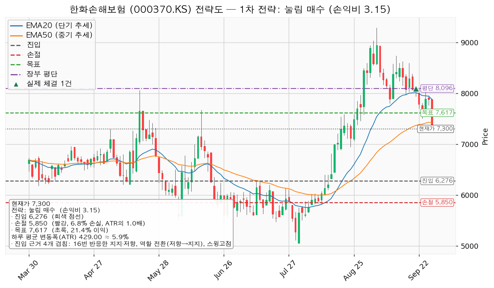
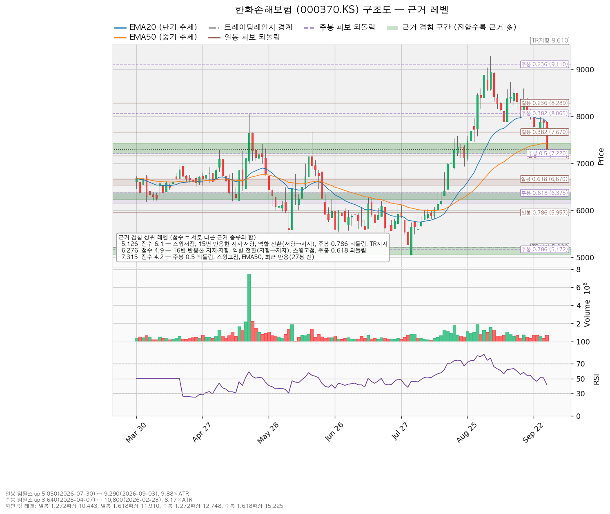
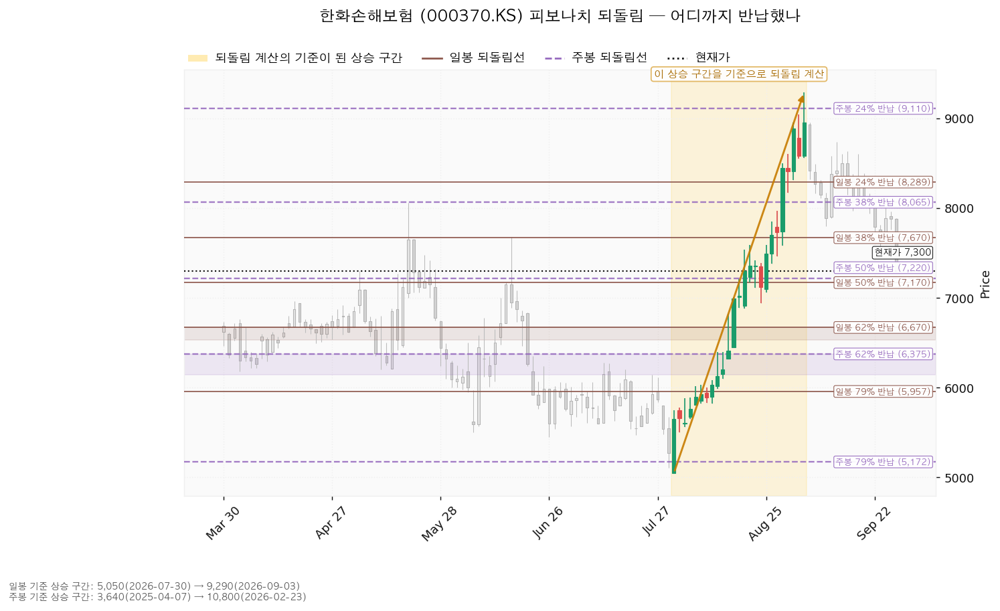
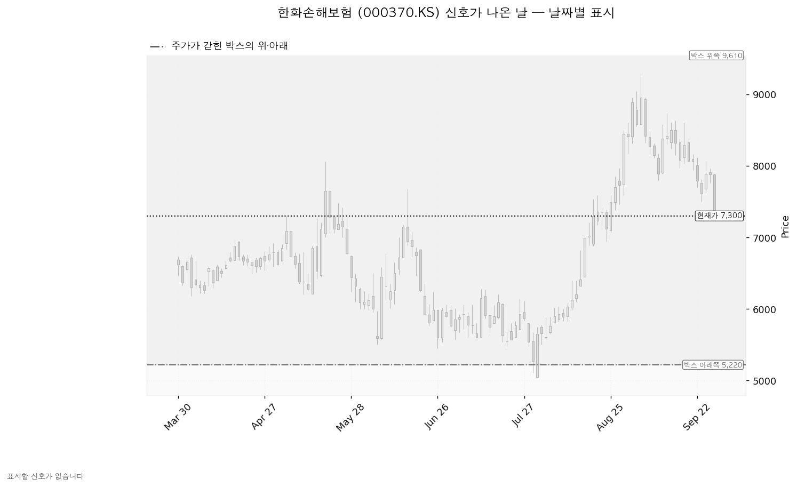

한화손해보험 (000370.KS)은 장기보험·자동차보험·일반보험을 파는 국내 손해보험사입니다.
현재가 7,300원(9월 30일 종가, -7.36%), 하루 평균 변동폭(ATR) 429원(주가의 5.88%).
| 구분 | 가격 | 판정 방식 | 현재가 대비 | 뜻 |
|---|---|---|---|---|
| 회복선 | 7,315원 | 일봉 종가 회복 후 되돌림 지지 (회복 대기) | +0.21% (0.04 ATR) | 주봉 0.5 되돌림 · 스윙고점 · EMA50 겹침. 매수선 아님. 종가로 넘으면 눌림 계획 종료 — 재분석 |
| 집행 손절 | 5,850원 | 장중 저가 터치 | -19.86% | 6,276원 매수분 전량 매도 (손절). 미진입 시 무의미 |
| 관망 종료 기준 | 없음 | — | — | 매수가 6,276원 장중 도달로 먼저 체결돼 그 아래에 계획을 끝낼 선이 없음. 다음 실적일은 조회되지 않음 |
| 확인선 | 7,617원 | 일봉 종가 돌파 후 되돌림 지지 (미돌파) | +4.34% | 목표와 같은 가격. 막히면 전량 매도 (목표 도달), 종가로 넘으면 상승 확정 → 새 셋업 |
| 폐기선 | 5,220원 | 이탈 후 3거래일 내 회복 실패(또는 그 전 4,791원 아래 종가) + 반등에서 저항 확인 (유지 중) | -28.49% (4.85 ATR) | 전량 매도 (시나리오 폐기). 실무상 작동하지 않음 |
| 항목 | 값 |
|---|---|
| 셋업 | 눌림 매수 · 구조 증명도 선취형(구조 미확인) |
| 진입 / 손절 / 목표 | 6,276원 (장중 도달) / 5,850원 / 7,617원에서 전량 매도 (목표 도달) |
| 손익비 | 1:3.15 (손절 0.99 ATR) |
| 엣지 | 평균회귀 — 지지로 눌릴 때 산다. 승률이 높고 이익 폭이 작은 유형(일반적 성격이며 이 엔진에서 잰 값이 아님), 저항에서 전량 매도가 정합적 |
| 근거 | 진입: 16번 반응한 가격(저항→지지로 바뀐 자리) · 스윙고점 · 주봉 0.618 되돌림 / 목표: 라운드피겨 · 일봉 0.382 되돌림 · 스윙고점 · 최근 반응(13봉 전) / 손절: 일봉 0.786 되돌림 · 라운드피겨 6,000원 · 13번 반응한 가격이 겹친 5,957~6,000원 구간 바로 아래 |
대표로 고른 이유는 손익비 3.15 × 선취형 × 네 근거 겹침이며, 구조가 증명되기 전에 되돌림에서 먼저 잡는 자리라 진입가는 유리하나 실패 확률이 높습니다. 상대강도·거래량 배수 0.85(지수 대비 20일 초과수익 -13.70%, 상대강도선 20일 기울기 -13.63%)는 순서를 바꾸지 않았고, 7,617원 돌파 매수는 손익비 1:0.55라 보류입니다. 손절이 이미 구조 아래라 별도의 구조적 손절 손익비는 산출되지 않았습니다. 진입~목표가 3.12 ATR이지만 분할하면 전 구간 손익비가 1:3.15에서 1:1.94(최악 경로 1:0.36)로 내려가 단일 청산을 씁니다. 계획 진입가 6,276원은 평단 8,096원보다 -22.48% 아래이며, 보유 50주를 5,850원 손절로 들고 가면 목표 7,617원까지 +4.34%, 손절까지 -19.86%라 보유를 이어갈 근거가 없습니다.

| 가격대 | 겹친 근거 |
|---|---|
| 6,225~6,375원 | 16번 반응한 가격(저항→지지) · 스윙고점 · 주봉 0.618 되돌림 — 진입 |
| 5,050~5,220원 | 15번 반응한 가격(저항→지지) · 스윙저점 · 주봉 0.786 되돌림 · 박스 하단 — 폐기선 |
박스는 727봉 중 최근 180봉(약 9개월), 5,220~9,610원입니다(40봉 창은 불성립, 90·180봉 성립). 박스 안쪽은 중립입니다 — 지지 테스트마다 매도 거래량이 줄고 상승봉 거래량이 하락봉의 1.55배지만 저점은 절하입니다. 가격은 직전 구간(3,935~7,107원)과 겹치는 자리에서 올라와 같은 횡보의 연장입니다.

일봉 되돌림 기준 구간은 7월 30일 5,050원 → 9월 3일 9,290원이며 현재가는 38.2%(7,670원)와 50%(7,170원) 사이입니다. 진입 6,276원은 주봉 구간(2025년 4월 3,640원 → 2026년 2월 10,800원)의 61.8%(6,375원)와 겹칩니다.

박스 안에서 속임수 하락·속임수 상승·강세·약세 신호로 잡힌 날이 없어 아래 차트에 색으로 남은 캔들이 없습니다. 국면 후보는 상승 추세 국면(이동평균 정배열)이고 RSI는 41.87입니다.

후행·선행 주가수익배수는 조회되지 않아 추정 주당순이익으로 봅니다 — 2026년 2,894원(+28.03%), 2027년 3,326원(+14.93%), 현재가 기준 2.52배·2.20배. 목표주가는 5명 평균 8,620원, 최저 8,000원, 최고 9,500원이며 현재가 7,300원은 5명 중 가장 낮은 목표보다도 아래입니다. 9월 3일 9,290원 대비 -21.42% 하락은 배수 수축입니다 — 2027년 추정치는 90일 +17.3%, 최근 30일 +8.0%로 상향이 진행 중이고, 2026년 추정치는 90일 +8.2%, 30일 +1.1%입니다. 현금흐름(2024-12-31 결산)은 영업 +1조 4,924억원, 잉여 +1조 4,692억원으로 적자가 아니며 설비투자 232억원(+155.8%)은 규모가 작습니다. 목표 7,617원은 2026년 이익 기준 2.63배(현재 2.52배), 2027년 기준 2.29배(현재 2.20배)로 대부분 이익 증가분 안에 있습니다. 컨센서스 평균 8,620원은 2027년 기준 2.59배라 배수 확장이 일부 필요합니다. 컨센서스 시계는 12개월, 이 셋업은 수 주입니다.
다음 실적 발표일이 조회되지 않아 날짜가 붙은 확인 이벤트를 넣지 못했고, 다음 실적 이후 구간의 역풍도 확인할 자료가 없습니다. 날짜 대신 2027년 추정 주당순이익 3,326원의 상향 지속 여부를 봅니다.
엔진 비중은 계좌의 14.7%(1% 리스크 기준)로 한 종목 상한을 넘어 13%로 제한합니다 — 계좌 139,498,400원의 13%인 18,134,792원, 6,276원에서 2,889주이며 손절 시 손실은 1,231,205원(계좌의 0.88%)입니다. 보유 50주를 매도한 뒤를 전제로 한 수량이며, 보험 테마의 현대해상 (001450.KS)을 더해도 테마 한도 35% 안입니다. 도구 적합성: ATR이 주가의 5.88%로 8% 아래이고 손절 폭은 0.99 ATR로 하루 평균 변동폭과 같아, 진입 당일 변동만으로 체결될 수 있습니다. 9월 30일 하루 변동폭은 610원(1.42 ATR)이었습니다. 최종 판정은 눌림 대기입니다 — 6,276원 장중 도달 시 매수, 손익비 1:3.15, 조건 점검 4/9(미달: 20일선 위 · 52주 고점 대비 · 지수 대비 20일 초과수익 · 상대강도선 신고가 · 거래량 강도). 보유 50주는 다음 세션 전량 매도 (손절)입니다.
후행·선행 주가수익배수와 다음 실적 발표일이 조회되지 않았고, 현금흐름은 2024-12-31 결산 기준입니다. 9월 30일 -7.36% 하락의 원인은 로컬 뉴스 수집에서 확인되지 않았습니다.
ATR(Average True Range) = 하루 평균 변동폭. EMA20·EMA50 = 최근 20일·50일에 가중치를 더 준 이동평균. RSI = 상승분과 하락분의 비율로 과열·침체를 재는 지표. 되돌림선(피보나치) = 직전 상승분을 몇 % 반납했는지 표시한 가격. 상대강도선 = 종목 가격을 기준 지수로 나눈 선.